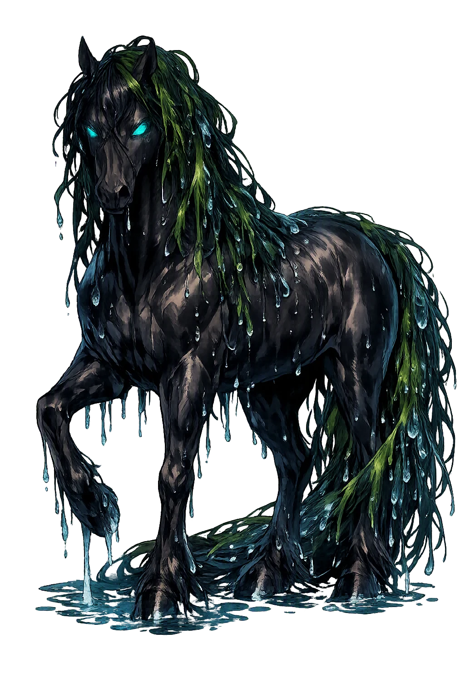
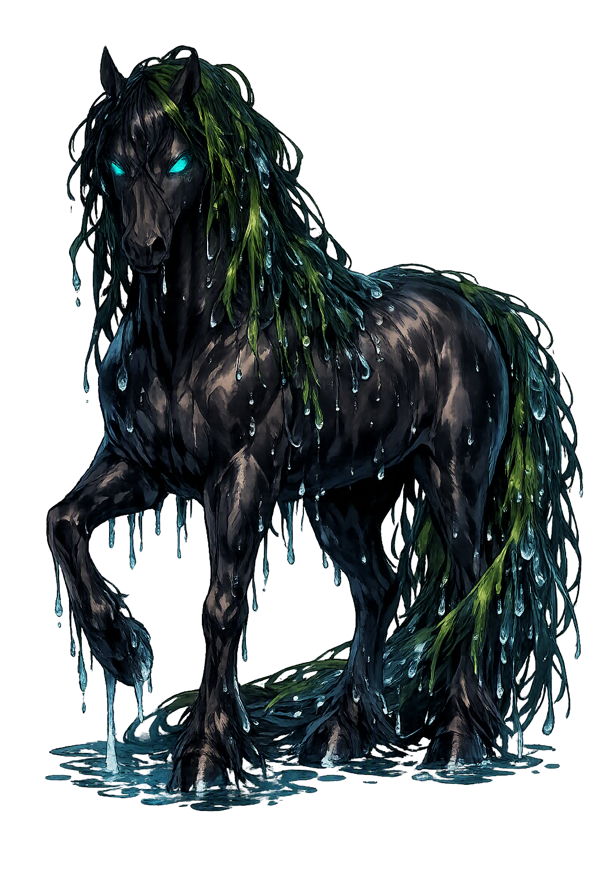

The Authentic Orthography
Water Horse, Drowner · The kelpie of Scottish glens

Unicode restoration and ASCII comparison
Eachuisge
The name survives in scholarly transliteration. Eachuisge is the standard Celtic romanisation, documented in academic sources — “Water horse”. Because the spelling uses only Latin letters, the form is the same in both ASCII and Unicode.
No indigenous writing system is securely attested for individual celtic names. The form shown is a modern scholarly transliteration.
eachuisge
The plain eachuisge form is identical to the Unicode restoration. Because this name is already written in Latin letters, no diacritics, stress, or script information were lost — only capitalization differs.
Eachuisge
The Unicode restoration does not need to recover lost marks for Eachuisge. Its value is canonical spelling and consistent cataloguing, not the reconstruction of erased orthography. The domain is readable as-is to both DNS and humanity.
Eachuisge.com → eachuisge.com
The non-ASCII characters in Eachuisge are encoded while the ASCII remains visible. To the DNS, it is Punycode. To humanity, it is Eachuisge.
How Eachuisge is preserved in writing
No indigenous writing system is securely attested for individual celtic names. The form shown is a modern scholarly transliteration.
Contribute scholarly provenance →Owned, ideal, and ASCII forms of Eachuisge
Eachuisge
The full Unicode restoration. eachuisge.com is not in the PuniCodex collection — it is watched for release; if it drops, this temple upgrades to an owned flagship.
How Eachuisge was spoken
The Perfect Stallion, the Adhesive Back, and the Liver That Floated Ashore
Eachuisge — the each-uisge, the water horse — is the most dangerous being in the Highland Otherworld: a shape-shifter that haunts the lochs and sea-lochs of Gaelic Scotland, wearing the shape of a flawless stallion at the water's edge. Mount him and your hands stick fast to his hide; the loch does the rest. The Lowland kelpie haunts rivers and is content to drown you — the each-uisge devours.
His true country: the deep freshwater lochs and sea-lochs of the Highlands, where he waits beneath the surface.
His chosen lure: a beautiful horse standing tame by the shore, offered to any traveler in a hurry.
Once mounted, the rider cannot dismount: the hide holds the hand like pitch, and the horse runs for the water.
His other shape: a fine young man by the shore — betrayed, the tales say, by the water-weed in his hair.
Stories of Eachuisge
The each-uisge has no medieval manuscript behind him: his mythology is oral, and its primary witnesses are the great nineteenth-century field collections of the Highlands — Campbell of Islay's Popular Tales of the West Highlands and John Gregorson Campbell's Superstitions of the Highlands and Islands of Scotland. The tales agree on the essentials with the consistency of a warning passed from shore to shore.
The core of every telling is the same. A traveler on the shore of a loch finds a beautiful horse standing idle — fine beyond any horse in the parish, saddled by luck, or so it seems. He mounts; the horse is smooth and willing; and then the rider finds his hands fast to the hide, stuck as if with bird-lime, and the horse's head already turned toward the water. The loch takes them both. In the grimmest tellings the loch gives the rider back in pieces — the tradition is exact about this: the each-uisge devours the whole body, and what floats ashore is the liver alone. That detail is the Highland folklore's way of drawing the line between its own water horse and the Lowland kelpie, which drowns but does not eat.
The best-known of the warning-tales gives the creature a longer game. A fine horse appears to children playing by a loch, and one by one they climb its back — and the back lengthens to take them, seat after seat, until all are mounted save one wary boy, who will only touch the hide with a finger. The horse springs for the water with its load of children, and the boy, stuck by that single finger, does the one thing left: he cuts the finger off and escapes. The loch gives back the others the next day, piecemeal. The collectors recorded the tale across the Highlands, and Briggs notes it among the each-uisge's defining episodes: the compound's lesson compressed into a single image — touch with everything and you lose everything; touch with a finger and a finger pays for the lesson.
The horse is only the working shape. The each-uisge also walks ashore as a fine young man, and the tales of the loch-side courting are as consistent as the tales of the ride. A girl meets a handsome stranger by the water; he lays his head in her lap and sleeps; and as she combs his hair with her fingers she finds in it the sand and weed of the loch bottom. She understands what is sleeping on her knee, eases her skirt free, and runs — and behind her the shape comes apart into horse and water. The weed in the hair is the tradition's signature: the shape-shifter can borrow any face but cannot shed the mark of the element he came from.
The record also remembers that the each-uisge can be killed, and how. Ordinary iron and ordinary courage fail against a thing that lives in the water; the answer the tales keep is fire carried into iron. In the well-known Highland account preserved by John Gregorson Campbell, a smith destroys a water horse with a red-hot iron — a spear or bar heated in the forge and driven home while the creature is held fast. The pattern is the old one the collectors noted across Gaelic tradition: the supernatural yields to the smith, whose craft joins the two elements the water horse cannot master — fire, and the metal that remembers it. The tale matters to the record because it is nearly unique: almost everything else the Highlands says about the each-uisge is a way to avoid him.
The each-uisge is the most honest monster in the Celtic record, because its method is consent. It does not chase, does not strike, does not break down any door. It stands at the water's edge in the shape of the one thing a tired traveler most wants — a beautiful horse, unclaimed, waiting — and it lets the victim do the approaching. Everything that follows follows from a single step: the moment of mounting. After that there is no further decision to make, and that is the horror the Highland tellers kept sharpening — the adhesive hide, the back that lengthens to take one more, the hands that will not come free.
Enter Extended Lore